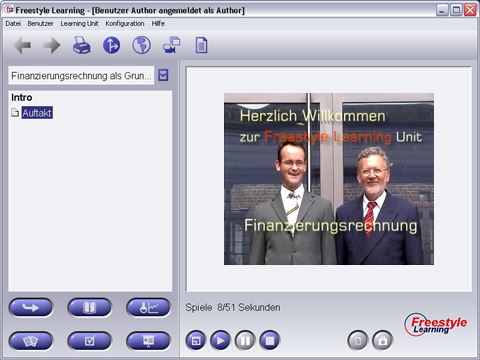

Wenn Sie eine Learning Unit zum ersten mal verwenden, ist die Intro-View ein geeigneter Startpunkt, um in die Inhalte dieser Unit einzutauchen. Hier finden Sie motivierende Videos, in denen Ihnen Aufbau, Lernziele und Hinweise zur Verwendung der Learning Unit gegeben werden. Meist stellen sich dabei auch die Autoren der Learning Unit vor. Verwenden Sie die Interaktions-Schaltflächen zum Starten und Anhalten der Videowiedergabe.

Selektieren Sie ein Element aus dem Structure Tree und drücken Sie die Starttaste, um mit der Wiedergabe des Videos zu beginnen. Mit der Pausetaste können Wiedergaben angehalten und durch anschliessendes Drücken der Starttaste fortgesetzt werden. Die Stoptaste beendet die Wiedergabe und setzt das Video auf den Anfang zurück. Während des Abspielvorganges können Sie durch das Drücken der Vollbildtaste zur Wiedergabe in dem Vollbildmodus wechseln. Beim Verlassen des Vollbildmodus wird der Abspielvorgang beendet und die Videosequenz auf den Anfang gesetzt. Neben den Standard-Interaktionsschaltflächen existieren weitere view-spezifische Interaktions-Schaltflächen.
View-spezifische Interaktions-Schaltflächen
|
Abspielen | Abspielen eines Videos starten |
| Pause | Abspielen eines Videos unterbrechen | |
|
Stopp | Abspielen stoppen und Video zurücksetzen |
|
Vollbild- oder Fenstermodus | Wechsel zwischen Vollbildmodus und Fenstermodus |
|
Skalierung | Wiedergabe des Intro-Videos in der Originalgröße |
Zurück zur Hauptseite